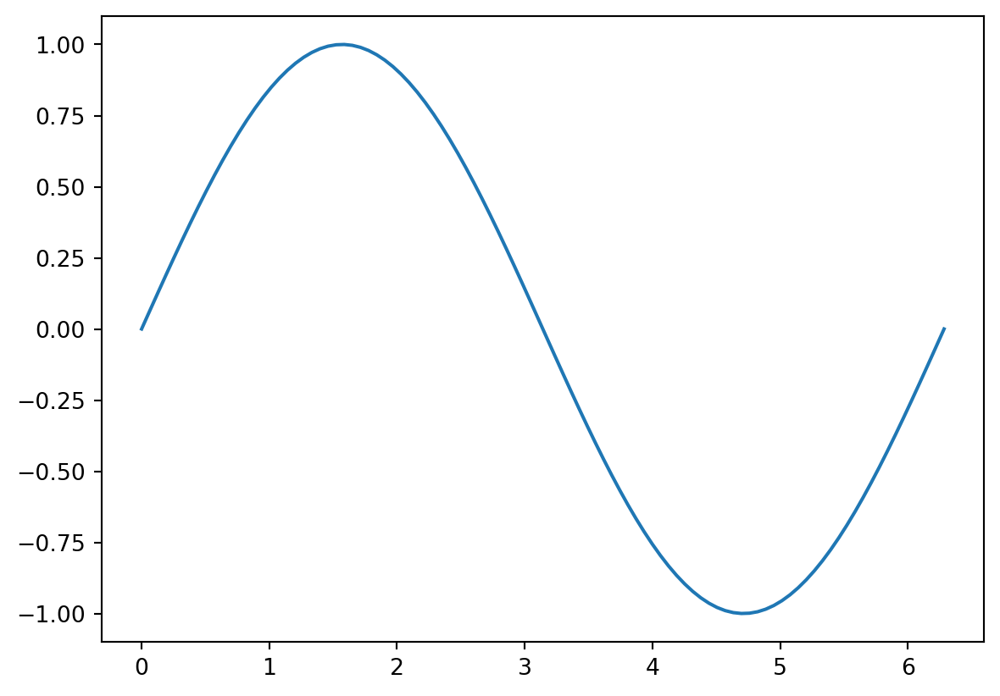
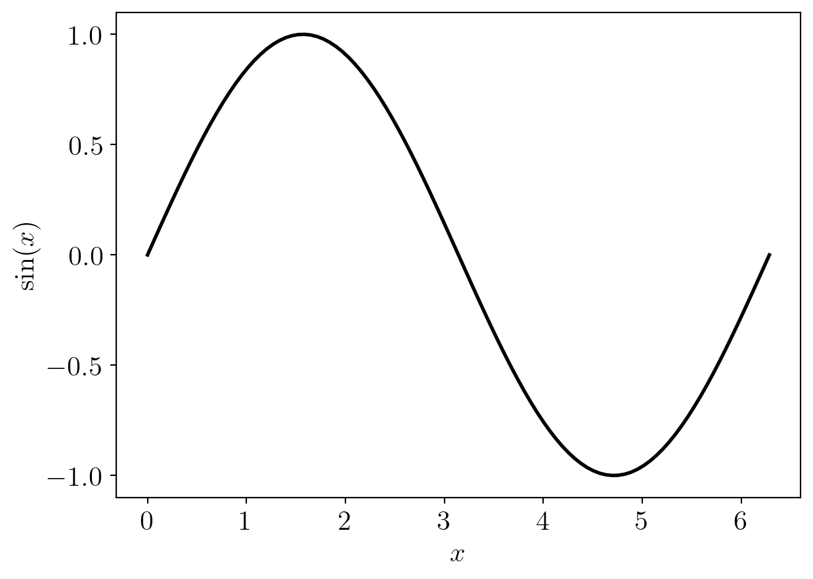

import numpy as npNumPy, SciPy, and Matplotlib
NumPy
- NumPy is a Python library that enables vectors and matrices to be stored as arrays
- NumPy provides very fast mathematical functions that can operate on these arrays.
Importing NumPy
It is common to import NumPy using the command
Defining arrays
- Arrays are defined using the
arrayfunction. - A vector (1D array) can be created by passing a list to
array
Example: Create the vector \(v = (1, 2, 3)\)
v = np.array([1, 2, 3])
print(v)[1 2 3]A matrix (2D array) can be created by passing a nested list to array, where each inner list is a row of the matrix
Example: Create the matrix \[ M = \begin{pmatrix} 1 & 2 \\ 3 & 4 \end{pmatrix} \]
M = np.array([ [1, 2], [3, 4] ])
print(M)[[1 2]
[3 4]]Accessing elements
- Individual elements in a 1D array can be accessed using square brackets and a numerical index
- Indexing NumPy arrays starts at 0
# print the second element of vector v
print(v[1])2- Use two indices separated by a comma for 2D arrays (first index = row, second index = column)
# print the entry in the second row, first column of M
print(M[1, 0])3Accessing sequential elements
A colon (:) can be used to access sequential elements in an array:
v = np.array([1, 2, 3, 4, 5, 6, 7, 8, 9])
print(v[:])[1 2 3 4 5 6 7 8 9]The notation v[a:b] will access entries starting at index \(a\) and ending at \(b-1\)
# print the third to fifth entries
print(v[2:5])[3 4 5]Some useful functions for creating arrays
linspace(a, b, N)creates a 1D array with \(N\) uniformly spaced entries between \(a\) and \(b\) (inclusive)eye(N)creates the \(N \times N\) identity matrixones(dims)creates arrays filled with ones, wheredimsis a tuple of integers that describes the dimensions of the arrayzeros(dims)creates arrays filled with zerosrandom.random(dims)creates an array with random numbers between 0 and 1 from a uniform distribution
Operations on NumPy arrays
Many mathematical operations can be performed immediately
+and-: element-by-element addition and subtraction*: scalar multiplication or element-by-element multiplicationdot(a,b): dot product of two 1D arraysaandb@: matrix multiplication
NumPy comes with mathematical functions that can operate on arrays (e.g. trig functions, exp, log) * np.sin(x): applies the sin function to each element of x
Linear algebra with NumPy
The linalg module of NumPy has functions for linear algebra. For example:
linalg.solve(A,b): Solve a linear system of equations of the form \(Ax = b\)linalg.det(A): Compute determinants of \(A\)linalg.inv(A): Compute the inverse of \(A\), ie \(A^{-1}\)linalg.eig(A): Compute the eigenvalues and eigenvectors of \(A\)
SciPy
Is a Python package that contains functions for a wide range of mathematical problems
- Special functions, e.g. Bessel functions
- Solving nonlinear equations
- Optimisation
- Interpolation
- Integration (including solving ODEs)
- Linear algebra (including sparse linear algebra)
- and more
The SciPy package is imported using the code
import scipyAs part of this unit, we will be solving nonlinear algebraic equations and optimisation problems
scipy.optimize.rootsolves algebraic equationsscipy.optimise.minimizeminimises a scalar function with multiple variables
We will also learn about other SciPy functions that are useful for finding the numerical solution to PDEs and optimisation problems.
Matplotlib
- Used for visualising data in Python (eg creating plots)
- Works well with NumPy
Usually imported using
import matplotlib.pyplot as pltA basic example
Plot \(y = \sin(x)\) from \(x = 0\) to \(x = 2\pi\)
x = np.linspace(0, 2 * np.pi, 100)
y = np.sin(x)
plt.plot(x, y)
plt.show()
- There are many options that can edited to make figures look nicer
- There are also many different styles of figures (e.g. contour plots, scatter plots)
- See https://github.com/rougier/matplotlib-tutorial for a good overview of the options
# use latex fonts and use a fontsize of 16 everywhere
plt.rcParams.update({"text.usetex": True, "font.size": 16})
# plot
plt.plot(x, y, linewidth=2, color='black')
# add labels to the axes
plt.xlabel(r'$x$')
plt.ylabel(r'$\sin(x)$')
# show the plot
plt.show()
Summary
- NumPy provides functionality for storing numerical data as arrays and performing operations on these
- SciPy contains functions for solving a wide variety of mathematical problems
- Matplotlib is for visualising data